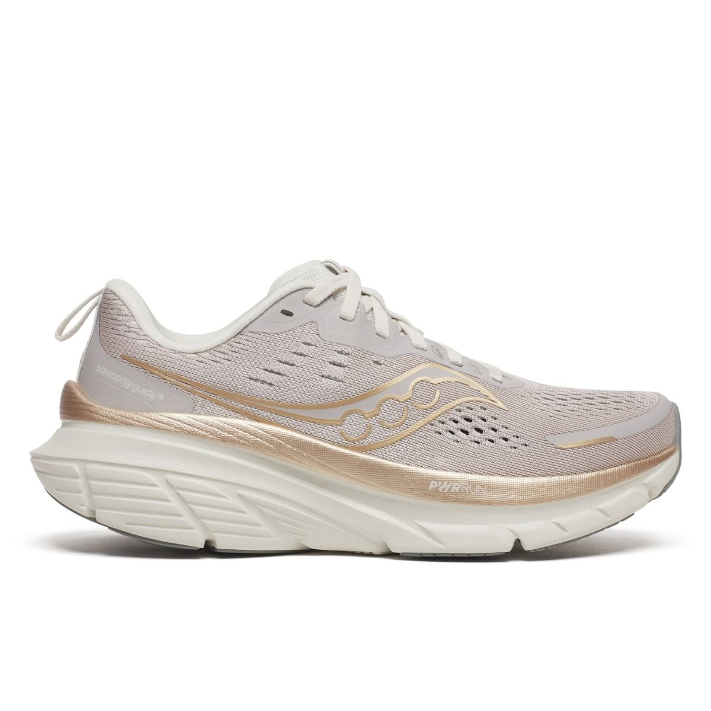
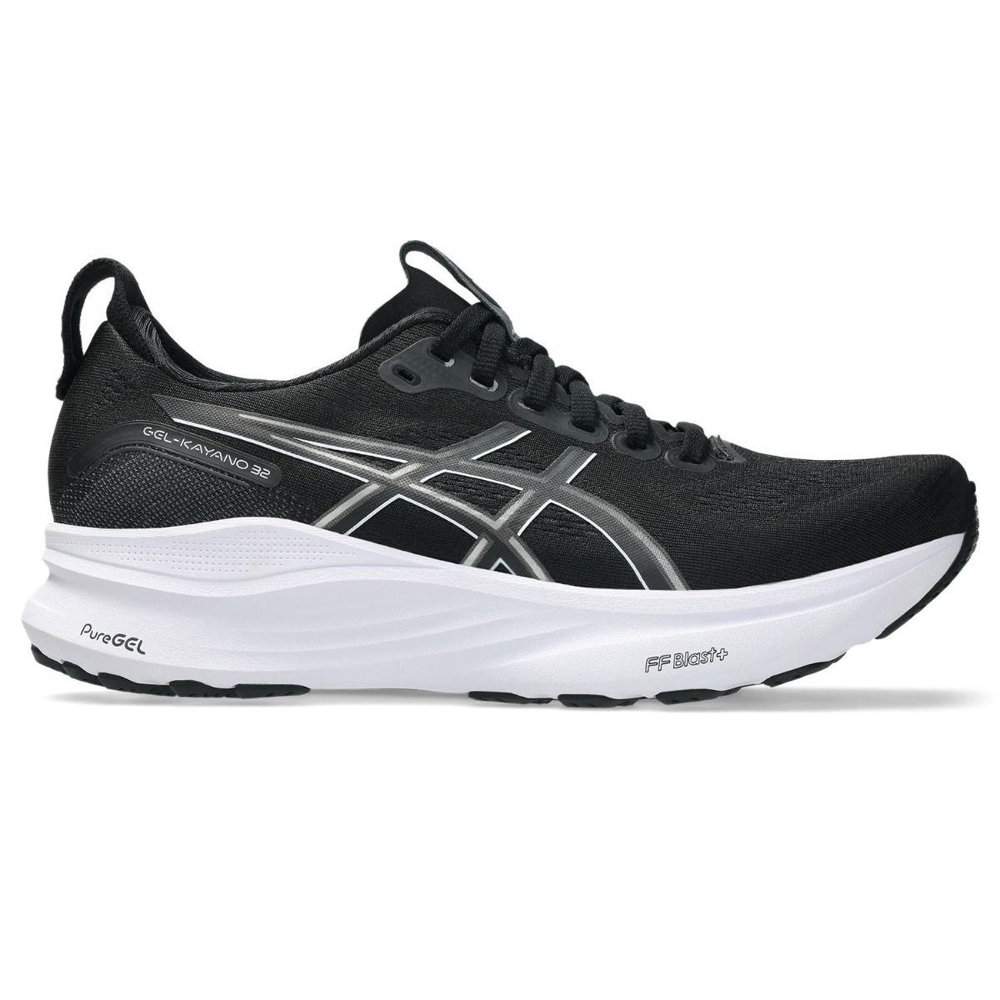

Guide Step X
Løbesko med let stabilitet til daglig træning.
Stabilitet
Ved pronation kan det være en fordel med en sko, der giver støtte på indersiden og hjælper foden til en mere kontrolleret bevægelse.
Løbesko med let stabilitet til daglig træning.
Stabilitet
Mere markant støtte til løbere med tydelig overpronation.
Support
Alsidig model til korte og mellem-lange ture.
Hverdag